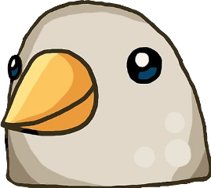

28/07/2018


Feliz Año Mi Amor!!!
Giovanni
Yo sé que no te eh escrito una carta, no es uno de mis fuertes y tú lo sabes, pero creo que ahora es un buen momento para redactar una.
Por donde puedo empezar...
Nosotros nos conocimos aproximadamente el 20 de Junio del 2015, investigue mucho para poder dar con ese número, puesto que ya tiene muchísimo tiempo desde aquel día,
4 años aproximadamente.
En aquel tiempo yo salía con tu amiga xD, no duro mucho esa relación, o intento de relación xDxD, pero de eso gane una amiga, la cual me parecía muy divertida y creo que yo también le parecía divertido, aparte de eso me agradaba hablar con ella, porque ella era y sigue siendo una mujer muy sencilla, es alguien con la cual puedes platicar de cualquier cosa y nunca te aburres.
Compartía muchas cosas con ella, como el gusto por ciertas series japonesas, el gusto por tipos de música y sobretodo también a los dos nos gustaba jugar videojuegos.
Platicábamos muy seguido yo y ella, pero paso el tiempo y pues nos fuimos separando poco a poco, por diversas circunstancias, más que nada por mi culpa, puesto que en aquel tiempo pensaba en muchas cosas que a día de hoy me parecen absurdas o sin sentido.
Paso el tiempo y volvimos a hablar. Volvíamos a platicar seguido como antes, yo diría que incluso más que en aquellos tiempos cuando te conocí.
Seguimos hablando por chat, hasta que se nos ocurrió salir, lo cual batallamos para hacerlo, puesto que siempre había algún impedimento que no nos dejaba vernos.
Hasta que el 14 de mayo del 2017 tuvimos nuestra primera cita por así decirlo, puesto que aquella vez solamente éramos amigos.
Seguimos saliendo y saliendo juntos, hasta que en algún momento yo empecé a verte como algo más que una amiga.
Pasaron una cuanta cita después hasta que me anime y te dije lo que sentía, yo era, y talvez siga siendo muy miedoso xD (por no decir clo xDxD) que te lo dije por mensaje, a lo cual tú me diste una oportunidad.
Lo intentamos, pero no pudimos ser pareja, por ciertas circunstancias que no voy a mencionar porque ya las sabemos xD...
Paso un tiempo para volver a hablar después de lo ocurrido, yo me separe de ti y aprovecho ahora para pedirte perdón por distanciarme, por haberte herido en aquel momento.
Volvimos a hablar y a vernos como amigos, recuerdo haber ido a tu escuela para platicar en el parque que está cerca, y así como esa primera vez empecé a ir más seguido, salíamos a comer, a almorzar y yo me la pasaba muy bien.
Cuando me di cuenta ya empezaba a enamorarme otra vez de ti, por las mismas razones de las cuales que enamoré aquella vez.
seguimos saliendo y saliendo hasta que volví a decírtelo, volví a confesarte mis sentimientos y tú me diste otra oportunidad, la cual no desaproveche, y en ese camión, cuando volvíamos de comer sushi me anime a darte un beso, ese fue nuestro primer beso (el cual ya sé que me tarde mucho y no me lo recuerdes ;(.
Para ese entonces seguíamos saliendo, pero yo no sentía que cambiara algo, seguíamos saliendo como amigos, tenía que esforzarme para que poder lograr algo más que una amistad contigo.
Empezó a darse una relación contigo, tuvimos algunas etapas durante ese periodo de tiempo, en el cual íbamos de ser amigos a convertirnos en pareja.
Batallamos mucho para poder salir de esas etapas, puesto que estábamos muy acostumbrados a ser lo que éramos, solamente amigos, hasta que lo logramos, un 28 (29 xDxDxD) de Julio del 2018, después de varias veces en las cuales yo te decía que fueras mi novia, ese día tú me dijiste a mi (en teoría yo te dije, pero tú fuiste la de la iniciativa xD), y desde ese momento empezó, después de 3 años de conocernos, una relación que hoy cumple un año "formal" de relación.
Oficialmente éramos pareja, tú fuiste mi primera pareja formal en mi vida, a lo cual yo no sabía cómo ser un buen novio, me parecía muy confuso todo eso de las parejas, batalle mucho para comprender en que consiste una relación.
Durante todo este año hemos hecho muchísimas cosas juntos, se me vienen todas esas veces que hemos ido a ritual, a tomar un poco y pláticas sobre las cosas que nos pasan en nuestra vida diaria, al igual de esas citas a cervecería, todas esas veces que fuimos al cine, los miércoles de películas y comer como cerdos xD, cuando fuimos a el baile de UJED, cuando cumplimos un mes y fuimos a Huarichic y a las nieves de Santa Rosa, cuando fue 14 de febrero y tú me regalaste ese origami de Luffy (el mejor regalo que me han dado mi amor), cuando cumplimos 6 meses, esos desayunos en de rechupete y esos cafés en el parque Morelos, las veces que hemos ido a la expo, etc etc etc. , tenemos muchísima historia junto amor, y todavía nos falta muchísima por descubrir, tu eres una de las mejores cosas que han pasado en mi vida y por eso quiero celebrar contigo este primer año de relación, porque un año no se consigue fácil y ni con cualquier persona.
Quiero recordar este día como uno de los mejores de nuestras vidas mi amor, te amo muchísimo y quiero seguir asi durante mucho tiempos mas xD.